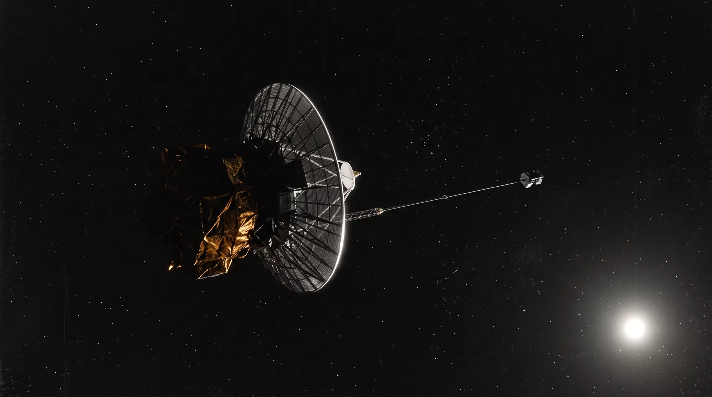

Interstellar Probe · Outbound 22 yr
DEEP RELAY
The farthest operating human-made spacecraft. Launched 30 June 2004, DEEP RELAY crossed the heliopause in February 2025 and now samples the very local interstellar medium — still calling home twice a week.
Mission Elapsed
DAY 8044
Distance from Sun
103.4217 AU
One-Way Light Time
14:20:09
DOWNLINK ACTIVE · DSS-43 CANBERRA 70 m · X-BAND 8.4152 GHz
Telemetry — Realtime FeedPNL-01 / TLM
Heliocentric Velocity
19.4327
km/s
▲ escape achieved 2005
Distance (Sun)
103.42171650
AU
▲ +1.297e-7 AU/s
Signal Delay (1-way)
14:20:09
hh:mm:ss
c-limited · fixed by geometry
RTG Output
341.8
W (of 470 W BOL)
▼ −4.2 W/yr decay
Bus Temperature
+12.6
°C internal
heaters duty 61%
Downlink Rate
348
bit/s · RS+conv coded
70 m aperture required
Ground Array — Sky SearchPNL-02 / TRK
Trajectory — Ecliptic ProjectionPNL-03 / NAV
Comms — CarrierPNL-04 / COM
Downlink — Optical Nav FramePNL-07 / IMG

Mission Log — Ops NotesPNL-05 / LOG
Payload & Flight OpsPNL-06 / OPS
| ID | Instrument | Function | Draw | Status |
|---|---|---|---|---|
| MAG | Fluxgate Magnetometer | Interstellar B-field vector | 2.2 W | ● ON |
| PLS | Plasma Spectrometer | VLISM ion density / flow | 4.1 W | ● ON |
| CRS | Cosmic Ray Subsystem | GCR flux 3–500 MeV/nuc | 5.4 W | ● ON |
| IDA | Interstellar Dust Analyzer | Grain mass / composition | 6.9 W | ● ON |
| PWS | Plasma Wave Antenna | Electron density via emission | 1.6 W | ● DUTY-CYCLED |
| UVS | UV Spectrograph | Heliospheric H Ly-α glow | — | ○ OFF 2022 (power) |
Flight operations — console shift C
| Console | Position | Assignee | Loop |
|---|---|---|---|
| FD-1 | Flight Director | M. Okonkwo | FLIGHT |
| ACE-2 | Command & Data Handling | R. Šimková | ACE |
| NAV-1 | Navigation / Ephemeris | D. Arrieta | NAV |
| TEL-3 | DSN Scheduling | K. Yamane | TRACK |